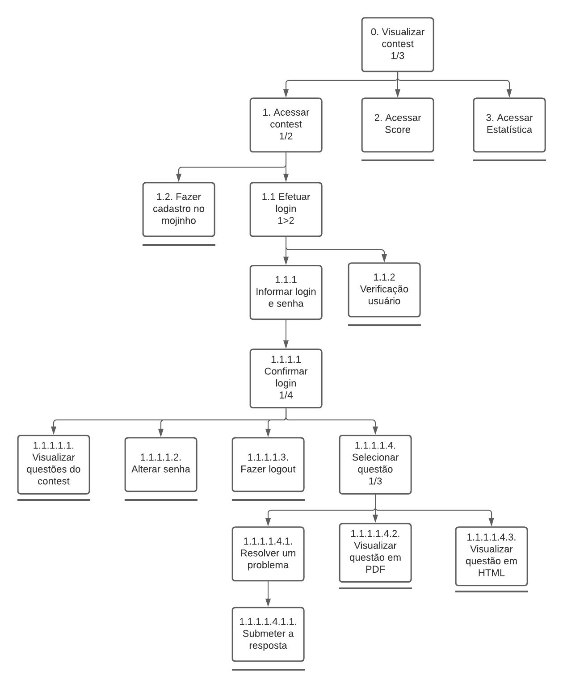

Análise de Tarefas
1. Introdução
Análise de tarefas é a parte de maior foco da área de interação humano computador, pois se preocupa com a performance do trabalho, e isso é o que a distingue de outras técnicas. Uma abordagem sistemática é adotada para descrever as propriedades dos modelos usados na análise de tarefas. Tem como objetivo fornecer ao designer a visão dos usuários em relação as tarefas que eles precisam executar (Diaper e Stanton, 2004).
2. Motivo da escolha
Decidimos utilizar esta técnica pois ela fornece uma abordagem genérica para a investigação de problemas de IHC (Annet e Diaper, 2003). E também porque ela facilita a ilustração de tarefas do sistema, separando-as em objetivos, subobjetivos e operações e os relacionando de diferentes maneiras em relação a como as tarefas devem ser executadas pelo usuário, demonstrando as possibilidades de inputs, ações, feedback e problemas que estão no contexto da ferramenta análisada.
3. Análise Hierárquica de Tarefas (HTA)
A Análise Hierárquica de Tarefas (HTA – Hierarchical Task Analysis) foi desenvolvida para entender as competências e habilidades exibidas em tarefas complexas e não repetitivas, e também para auxiliar na identificação de problemas de desempenho. Ela ajuda em relacionar o que as pessoas fazem, por que o fazem, e quais os efeitos caso não o façam corretamente (Barbosa e Silva, 2010).
3.1 Diagrama HTA para realizar contest como aluno

3.2 Representação de Tarefas para o objetivo de realizar contest como aluno
| Objetivo/Operações | Problemas e Recomendações |
|---|---|
| 0. Visualizar contests 1/3 | ação: Selecionar entre presentes, passados e vindouros plano: Participar de um contest e resolver os problemas |
| 1. Acessar contest 1/2 | ação: Clicar no contest desejado plano: Acessar o contest desejado |
| 1.1. Efetuar Login 1/2 | plano: Visualizar questões do contest |
| 1.1.1. Verificação usuário | feedback: O sistema informa se a senha está incorreta |
| 1.1.2. Informar login e senha | input: Fornecer login e senha |
| 1.1.2.1. Confirmar login 1/4 | ação: Clicar no botão de login |
| 1.1.2.1.1. Visualizar questões do contest | plano: Visualizar questões do contest |
| 1.1.2.1.2. Alterar senha | feedback: O sistema informará se é possível alterar a senha input: A nova senha ação: Clicar no botão de mudar a senha |
| 1.1.2.1.3. Fazer logout | ação: Sair do contest atual |
| 1.1.2.1.4. Selecionar questão 1/3 | plano: Escolher uma questão para resolver ou visualizar |
| 1.1.2.1.4.1. Resolver um problema | ação: Pensar numa solução para o problema |
| 1.1.2.1.4.1.1. Submeter a resposta | ação: Clicar no botão e selecionar um arquivo feedback: O sistema irá informar o veredito da submissão |
| 1.1.2.1.4.2. Visualizar questão em PDF | ação: Abrir descrição da questão em um documento PDF |
| 1.1.2.1.4.3. Visualizar questão em HTML | ação: Abrir descrição da questão em um documento HTML |
| 1.2. Fazer cadastro no mojinho | ação: Fazer cadastro do usuário por meio do chatbot mojinho |
| 2. Acessar score | plano: Visualizar quais questões os participantes já enviaram e/ou acertaram |
| 3. Acessar estatística | plano: Visualizar os dados estatísticos acerca das questões feedback: O sistema informará se a estatística está disponivel |
3.3 Diagrama HTA para gerenciar contest como professor

3.4 Representação de Tarefas para o objetivo de gerenciar contest como professor
| Objetivo/Operações | Problemas e Recomendações |
|---|---|
| 0. Efetuar login | plano: Efetuar login e senha |
| 1. Informar login e senha | input: Fornecer login e senha |
| 2. Confirmar login 1/8 | ação: Clicar no botão de login |
| 2.1. Acessar Sherlock | plano: Descobrir as submissões suspeitas de plágio feedback: O sistema informa os códigos que suspeitos de plágio |
| 2.2. Acessar Score | plano: Mostrar quais questões foram enviadas pelos participantes do contest |
| 2.3. Visualizar questões do contest | plano: Visualizar as questões do contest |
| 2.4. Alterar Senha | feedback: O sistema informará se é possível alterar a senha. problema: O sistema não permite que a senha seja alterada. |
| 2.5. Fazer logout | ação: Sair do contest atual |
| 2.6. Selecionar questão 1/3 | plano: Selecionar uma questão para resolver |
| 2.6.1. Resolver um problema | ação: Criar uma solução para o problema proposto |
| 2.6.1.1. Submeter a resposta | ação: Clicar no select para escolher a questão e submeter o script/código com a possível solução da questão |
| 2.6.2. Visualizar questão em PDF | ação: Mostrar questão em formato PDF. |
| 2.6.3 Visualizar questão em HTML | ação: Mostrar questão em formato HTML. |
| 2.7. Visualizar estatísticas | plano: Visualizar os dados estatísticos acerca das questões feedback: O sistema informará se a estatística está disponivel |
| 2.8. Visualizar todas as submissões | ação: Mostrar todos os exercícios enviados por cada aluno. |
4. Referências Bibliográficas
- BARBOSA, Simone; SILVA, Bruno. "Interação Humano-Computador". Elsevier Editora Ltda, 2010.
- DIAPER, Dan; STANTON, Neville. "The handbook of task analysis for human-computer interaction". Mahwah, NJ: Lawrence Erlbaum Associates, 2004.
Versionamento
| Versão | Data | Modificação | Autor |
|---|---|---|---|
| 1.0 | 03/10/2020 | Criação documento de análise de tarefas | Todos os integrantes |
| 1.1 | 03/10/2020 | Ajustes gerais ao documento de análise de tarefas | Todos os integrantes |
| 1.2 | 03/10/2020 | Atualização dos links das imagens do documento de análise de tarefas | Thiago Lopes |
| 1.3 | 03/10/2020 | Correção gerais nos textos e diagramas | Igor Paiva |